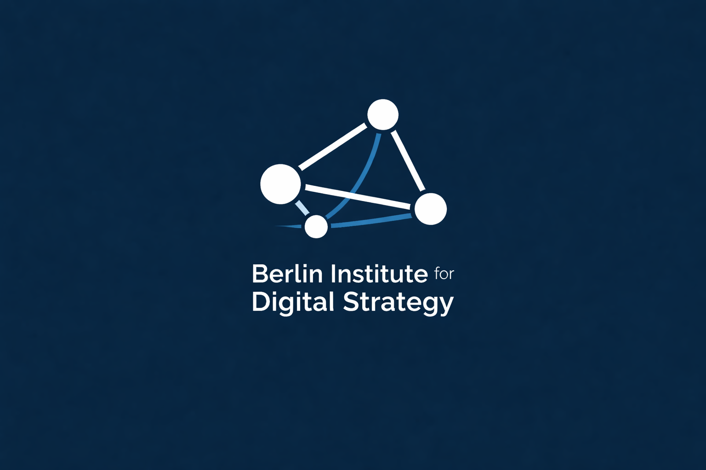

CLDG is an independent research laboratory dedicated to the strategic analysis of global digital governance. We integrate computational tools with multi-disciplinary perspectives to audit the evolving technical and political landscapes of the digital age.
Status: Live Monitoring | Method: Data-Driven Auditing | Scope: Global Policy & Strategy
Advanced Python workflows for multi-lingual policy extraction and ML-enhanced semantic shift detection in official discourse.
Evidence-based insights for global governance stakeholders, grounded in large-scale textual corpora analysis.
A comparative NLP auditing of policy texts from Beijing and Brussels.
Examination of geopolitical impact on digital discourse through computational methods.